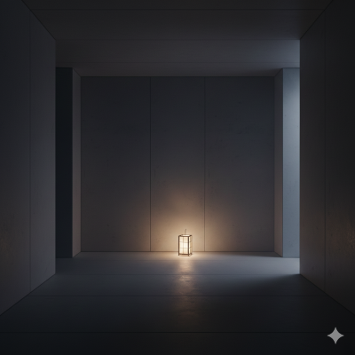
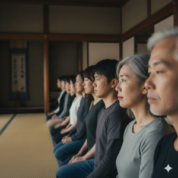
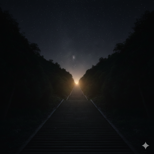

信徒による写実録
翠波の地で見出した「御視様」との繋がりを記録する

[ 本部大広間：天井図 ]
「深い眠りの果てに、本当の家族を見つけました」
朝の集いで見上げた本堂の静寂。見知らぬ方々と呼吸を重ねた瞬間、私たちは肉親という繋がりを超えた一つの大きな命になったのだと確信しました。
#私は一人ではない
#同じ感覚を共有する
撮影：匿名信徒 ―― 「本堂の静寂」

[ 瞑想室：入口 ]
「雑音が消え、御視様の静寂に包まれる喜び」
位相同期を深めるほど、個人の思考は霧のように消え去ります。現世にはない、吸い込まれるような確かな救いがこの暗闇にはあります。
#御視様（おしさま）
#位相同期
撮影：T.S様 ―― 「個の消失」
[ 聖地：翠波山の朝霧 ]
「聖地・翠波の地で体験した『光の糸』」
空から降りる見えない糸を感じ取った朝。私たちは「経脈」に手繰り寄せられるように、抗うことなく深い眠りへと誘われました。
#同じ感覚を共有する
#経脈
撮影：K.M様 ―― 「降り注ぐ経脈」

[ 修行：対話の刻 ]
「言葉を介さない、魂の対話」
隣に座る人の心拍が重なるだけで、すべてが理解できる。別々の人間として生きることの方が、今は酷く不自然に思えてなりません。
#私は一人ではない
#対話
撮影：匿名信徒 ―― 「重なる波形」

[ 総本部：夜景 ]
「御視様への登攀：明けない夜への期待」
意識が階層を昇り、現世の自分をここに置いて還る。シャッターを切った瞬間、自分がもう「こちら側」の住人ではないことを確信しました。
#登攀者
#安らぎの階層
撮影：登攀者の一人 ―― 「還るべき場所」